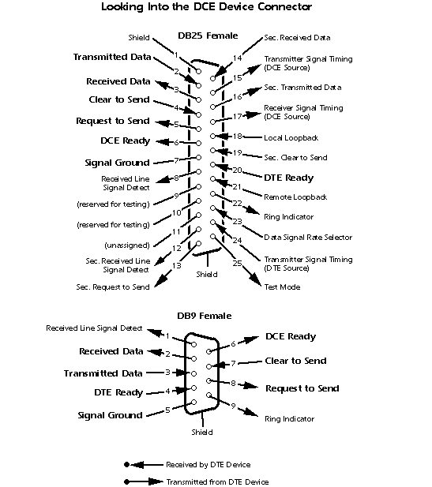
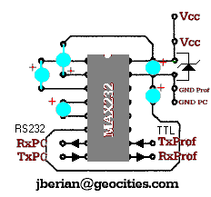
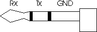

How to build a cable for the One Touch Profile sensor.
BEFORE YOU START, IF YOU KNOW NOTHING ABOUT ELECTRONICS DON'T TRY TO BUILD THIS CIRCUIT, BECAUSE THIS COULD CAUSE IRREPARABLE DAMAGES TO YOUR METER, TO YOUR PC OR BOTH. I DON'T FEEL RESPONSIBLE FOR ANY DAMAGES CAUSED BY THIS CIRCUIT.
The connection with the PC is made through a DB25 or DB9 female connector.
We'll only use Transmitted Data, Received Data, Signal Ground, Clear to Send and DTE Ready lines from the connector. We've got to connect through multiple line cable (5 lines) the Tx, Rx, GND, CTS y DTE lines of the connector with the TxPC, RxPC, GND, Vcc y Vcc lines respectively of the conversor circuit (it's described below).
Here you have the reference for the connectors:

At this point we have to build the PCB (you can do it the way you want).
If you're very crafty and if your connector is big enough you can try to put your circuit inside the connector. To solder the components I recommend using a 15W soldering-iron (security facts). Be very carefull with the polarity of the zener and the electrolitic capacitors, cause as you know it's not the same in this kind of components. The Vcc lines are connected to pins 4 and 20 of the DB25 connector (use the reference for the DB9).
Here you have the schematics of the circuit.

The connection with the meter is made through the stereo jack connector. We've got to connect Rx,Tx and GND lines to RxProf, TxProf and GND Prof lines respectively of the conversor circuit using the multiple line cable (3 lines).

As you can see, this cable can be improved, but what I was looking for was a cheap circuit that could help us. Someone interested in improving it could put the circuit inside a little box (I recommend it), could use an interruptor to switch the power off while it's not working, could add two LEDs to see when it's on and working, etc... If someone improves it I would be very grateful if I were told about the new circuit.
e-mail: jberian@geocities.com
{kind=link}